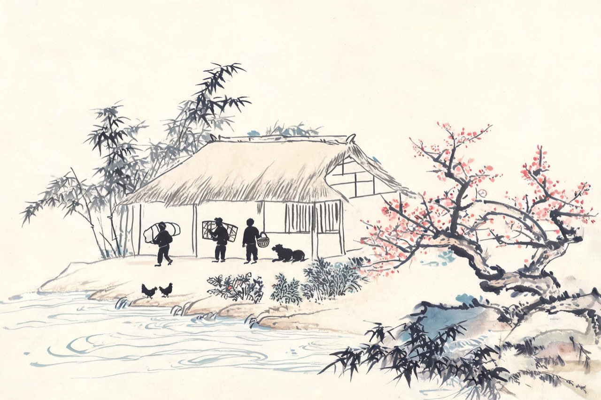

杜甫 · 759-765
草堂
休憩与再痛
秦州的秋夜，你接连梦见李白——一别十五年，音书断绝，只听说他被判长流夜郎，生死不明。凉州的风声里，你写：「文章憎命达，魑魅喜人过」。而梦里那个人，分明还在——
梦李白二首（其一）
〔其一全文；其二节引「三夜频梦君」「千秋万岁名，寂寞身后事」两处，余从略。〕
死别已吞声，生别常恻恻。
江南瘴疠地，逐客无消息。
故人入我梦，明我长相忆。
恐非平生魂，路远不可测。
魂来枫林青，魂返关塞黑。
君今在罗网，何以有羽翼。
落月满屋梁，犹疑照颜色。
水深波浪阔，无使蛟龙得。
——其二（节）
三夜频梦君，情亲见君意。
……
千秋万岁名，寂寞身后事。
注
- 李白 759 年三月经赦还至江陵，杜甫在秦州未闻赦讯，疑其生死——时序 notes 说明
- 「千秋万岁名，寂寞身后事」：为李白占身后名，亦自况——笺解从通行本
- 李白两年后（762）卒于当涂——本场景为李白篇「捉月」之后人间的记挂：双篇暗线交汇点
秦州寄人篱下，无食无衣，一个月后你带着全家继续南行，到了同谷。你以为这里会有栗可拾、有药可采——同谷的日子比秦州更惨：天寒日暮，你在山谷里捡橡栗充饥。你把这一段的自己写成七首歌——
乾元中寓居同谷县作歌七首（其一·其七节选）
〔其一全文；其七节引首句，余从略；七歌中「有弟有弟在远方」「有妹有妹在钟离」诸章从略，全文俟按仇注校录。〕
有客有客字子美，白头乱发垂过耳。
岁拾橡栗随狙公，天寒日暮山谷里。
中原无书归不得，手脚冻皴皮肉死。
呜呼一歌兮歌已哀，悲风为我从天来。
——其七（节）
男儿生不成名身已老，三年饥走荒山道。
注
- 七歌各章分咏己身、弟妹、国家——本场景取其一（自写）与其七（总结），笺选从通行本
- 同谷仅居约一月，岁暮即赴成都——行程序 notes 说明

草堂
岁暮，你翻过木皮岭；正月，进了成都。上元元年春，在城西七里的浣花溪畔，你找到了一块地方——溪水回环，林塘清幽。
你开始筑屋。表弟出资，朋友们凑钱：一棵桃树的钱，一棵绵竹的钱，一个瓷碗的钱……你一一写诗记账。没有采买豪侈，只有一所茅屋的千辛万苦。
茅屋落成了。背郭堂成，凭江槛立，白鹭、黄鹂、细雨、微风，都成了窗外的邻居。漂泊五年后，你终于又有了一个家。
你在这里住了不到四年，断断续续。这座草屋后来塌了、修了、被风揭了顶、被军队占过——但一千二百年后，它还在，改名叫了杜甫草堂。成都人把一条江、一片城区、无数商家招牌，都给了这个名字。
注
- 筑堂资助：表弟王十五司马及高适、严武等故旧——诸诗可证，信史级
- 「漂泊五年后」：自天宝十四载（755）安史乱起算——校对 B1
- 「背郭堂成，凭江槛立」出《堂成》；草堂后世演变（宋以来祠宇）为收束语背景——notes 标
- 行程：759 岁暮过木皮岭，经白沙渡、飞仙阁、剑门，760 正月抵成都——校对 C3
上元二年早春，成都落了一场夜雨。你在草堂里听——雨无声地下，不惊扰任何人。乱世里过了一辈子的人，被一场好雨安慰了——
春夜喜雨
好雨知时节，当春乃发生。
随风潜入夜，润物细无声。
野径云俱黑，江船火独明。
晓看红湿处，花重锦官城。
注
- 「潜入夜」「细无声」：拟人而无一字点破——通篇「喜」字不出现而喜意自见，笺解从通行本
- 锦官城：成都别称
暮春，你一个人沿着浣花溪散步——寻花。走到黄四娘家的小路，花把路都淹了。你写黄四娘的花，写得像孩子——
江畔独步寻花七绝句（其六）
黄四娘家花满蹊，千朵万朵压枝低。
留连戏蝶时时舞，自在娇莺恰恰啼。
注
- 黄四娘：草堂邻家——姓氏无考，即景即人
- 「恰恰」：莺啼声密——拟声说，notes 从通行笺
八月，秋风来了。它怒号着卷走了你屋上的三重茅草，茅草飞过江去，挂上树梢，沉进塘坳。南村的孩童抱着茅草跑进竹林，你喊得唇焦口燥，追不上，只能拄着杖自己叹气。夜里下起雨，屋漏、衾寒、彻夜湿冷——就在这样的长夜里，你想的不是自己的屋子——
茅屋为秋风所破歌
八月秋高风怒号，卷我屋上三重茅。
茅飞渡江洒江郊，高者挂罥长林梢，下者飘转沉塘坳。
南村群童欺我老无力，忍能对面为盗贼。
公然抱茅入竹去，唇焦口燥呼不得，归来倚杖自叹息。
俄顷风定云墨色，秋天漠漠向昏黑。
布衾多年冷似铁，娇儿恶卧踏里裂。
床头屋漏无干处，雨脚如麻未断绝。
自经丧乱少睡眠，长夜沾湿何由彻！
安得广厦千万间，大庇天下寒士俱欢颜，风雨不动安如山！
呜呼！何时眼前突兀见此屋，吾庐独破受冻死亦足！
注
- 由一屋之破推及天下寒士——杜甫人格的标志时刻，笺解从通行本
- dark 依据：屋破夜湿的寒夜+「吾庐独破受冻死亦足」的痛愿
宝应元年，你送严武入朝，归途被阻——成都少尹徐知道举兵作乱，你进不了城，只好带着家眷避往梓州，一住一年半。就在这漂泊的第二年春天，官军收复河南河北、安史之乱平定的消息传到剑外。你平生第一次写出这样的诗——后人叫它生平第一快诗——
闻官军收河南河北
剑外忽传收蓟北，初闻涕泪满衣裳。
却看妻子愁何在，漫卷诗书喜欲狂。
白日放歌须纵酒，青春作伴好还乡。
即从巴峡穿巫峡，便下襄阳向洛阳。
注
- 「生平第一快诗」——浦起龙《读杜心解》评语
- 末联四地名连珠：还乡路线的诗化——笺解从通行本
- 「青春作伴」：春光作伴；时在春，正相合
杜工部
广德二年春，严武再镇蜀地。乱平了，你带着家回到草堂——离开两年的茅屋还在，只是更破了。
严武表荐你为检校工部员外郎，请你入幕任节度参谋。后世叫你杜工部，就是从这个加衔来的。幕府的日子清苦而拘束：天不亮入府，日暮才归，节度使的仪仗里容不下诗人的散漫。你那阵子写给严武的诗，满是束缚酬知己的苦笑。
几个月后，你辞职回了草堂。做官的日子，你一生加起来前后不过三四年——这一次是最后一次。
回草堂的那个春天，你写了一组绝句，其中一首二十八个字，后来成了汉语里最有名的儿童诗：两个黄鹂鸣翠柳，一行白鹭上青天。窗含西岭千秋雪，门泊东吴万里船。
注
- 幕职为节度参谋，检校工部员外郎为严武表荐的加衔——职衔措辞从职官考订
- 「前后不过三四年」：胄曹参军（755.10 起）＋左拾遗（757.5-758.6）＋华州司功（758.6-759.7）＋严武幕参谋（764），名义合计约三年余——校对 B6
- 「束缚酬知己」意出《遣闷奉呈严公二十韵》——幕府苦况，notes 备
- 两个黄鹂（其三）作于 764 春重返草堂——系年与 760 筑堂分开，notes 说明
去蜀
永泰元年四月，严武死了。年仅四十岁。
你在成都最后的一点依靠，没有了。新任节度使是郭英乂，武人骄横，不是可以相依的人；蜀中的局势眼看又要乱。五月，你带着全家登舟，离开成都，顺岷江而下。
五载客蜀郡，一年居梓州——你后来总结这六年，只用了十四个字。成都给了你一生里最长的一段安稳，也看着它一寸一寸收了回去。
舟发锦江，回头望，草堂的茅檐隐在修竹后面，越来越小。你没有再回过成都。
注
- 严武卒年四十——本传；五月离蜀东下——系年从年谱
- 「转作潇湘游」预示后半生行程——本场景收束引文，不占独立 poem 场景